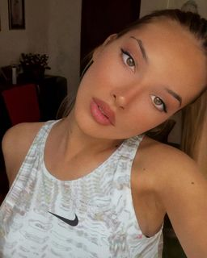

O MENI 😍
Ja sam Djurdjina Tomić , rodjena sam u Novom Sadu a živim u Tovariševu, trenirala sam odbojku 3 godina ali sam nažalost morala da prestanem zbog povrede kolena
Iako sam imala tu tužnu završnicu sa odbojkom ostala sam njen veliki fan i pratim odbojku redovno .
Osim odbojke nekad gledam i ostale sportove kao što su fudbal,košarka,tenis(kao mala sam ga isto trenirala ali sam prestala jer sam se preselila u Tovariševo)
